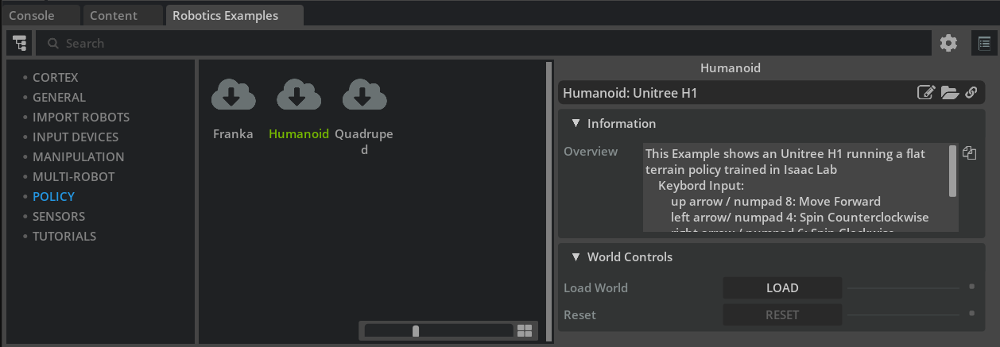

Deploying Policies in Isaac Sim¶
Learning Objectives¶
After completing this tutorial, you will know:
- How to run the H1 (humanoid) / Spot (quadruped) flat-terrain locomotion policy demos
- The training and export workflow for policies in Isaac Lab
- How to read the environment parameter files (
env.yaml/agent.yaml) that Isaac Lab generates - The structure of the Policy Controller class that drives a robot with a policy
- How to convert position outputs to torque controls (actuator networks)
- The debugging procedure for when a policy does not work
- The entry point to Sim-to-Real deployment
Getting Started¶
Prerequisites¶
- Familiarity with basic Isaac Sim usage and Python scripting (Core API tutorials)
- Understanding the basics of articulations and joint drives (Robot Setup Tutorial 13: Rig a Legged Robot) will make this tutorial easier to follow
- Running the demos (Step 1) and reading the definition files can be done with Isaac Sim alone. Complete the Isaac Lab Setup only if you want to run the training / export of Step 2 yourself
Estimated Time¶
About 20–30 minutes
Overview¶
This tutorial walks through the process of deploying a policy trained in Isaac Lab into Isaac Sim, following the samples and robot definition files.
There are many situations where you want to run a trained policy in Isaac Sim. For example:
- You want the robot to perform complex locomotion
- You want to combine the policy with other stacks such as navigation or localization and test them together in simulation
- You want to use the policy through an existing interface such as the ROS 2 bridge
Division of roles between Isaac Lab and Isaac Sim
Isaac Lab is a robot learning framework built on top of Isaac Sim, providing APIs and sample environments for reinforcement and imitation learning. A policy here means a trained neural network (control policy) that takes observations (joint positions, velocities, commands, ...) as input and outputs actions (such as target positions for each joint). The typical workflow is:
- Train a policy in Isaac Lab using thousands of parallel environments
- Export the trained policy as TorchScript (a
.ptfile) - Load the policy in Isaac Sim and run inference to drive a single robot ← the scope of this tutorial
The crucial point is to reproduce the training-time environment configuration (joint order, gains, observation scales, ...) exactly on the inference side. If these disagree, the robot will not walk properly. The debugging section of this tutorial is essentially a guide to finding such mismatches.
Step 1: Try the Demos¶
Let's first experience the finished result. Enable Window > Examples > Robotics Examples and open the Robotics Examples tab at the bottom of the screen.
1-1. Unitree H1 Humanoid Example¶
- Create an empty stage (File > New From Stage Template > Empty).
- Open Robotics Examples > POLICY > Humanoid.

- Press LOAD to load the scene.
In this example, the H1 Flat Terrain Policy trained in Isaac Lab controls the humanoid's locomotion.

You can drive it with the keyboard:
| Action | Key |
|---|---|
| Move forward | ↑ / NUM 8 |
| Turn left | ← / NUM 4 |
| Turn right | → / NUM 6 |
1-2. Boston Dynamics Spot Quadruped Example¶
- Create an empty stage.
- Open Robotics Examples > POLICY > Quadruped.

- Press LOAD to load the scene.
In this example, the Spot Flat Terrain Policy controls the quadruped's locomotion.

| Action | Key |
|---|---|
| Move forward | ↑ / NUM 8 |
| Move backward | ↓ / NUM 2 |
| Move left | ← / NUM 4 |
| Move right | → / NUM 6 |
| Turn left | N / NUM 7 |
| Turn right | M / NUM 9 |
Standalone examples and policy files
For the standalone (non-UI) workflow and for the policy files used by these examples, see the official documentation of the isaacsim.robot.policy.examples extension.
Step 2: Training and Exporting in Isaac Lab¶
2-1. Training¶
The first step toward deploying a policy is training it in Isaac Lab. For training existing or custom tasks, see the Isaac Lab tutorials.
The task names of the policies used in the demos above are:
- Unitree H1:
Isaac-Velocity-Flat-H1-v0 - Boston Dynamics Spot:
Isaac-Velocity-Flat-Spot-v0
For example, the command to train the H1 flat-terrain policy with Isaac Lab 2.0 is:
./isaaclab.sh -p scripts/reinforcement_learning/rsl_rl/train.py --task Isaac-Velocity-Flat-H1-v0 --headless
2-2. Export¶
A policy trained with RSL-RL can be exported by running scripts/reinforcement_learning/rsl_rl/play.py in the Isaac Lab workspace.
./isaaclab.sh -p scripts/reinforcement_learning/rsl_rl/play.py --task Isaac-Velocity-Flat-H1-v0 --num_envs 32
Where and when the export happens
The export runs once, right at startup of play.py (immediately after the checkpoint is loaded). The robot walking that follows is just policy playback and has nothing to do with the export — by the time the window opens, the export is already done, so you can simply close it.
The files are generated not next to play.py, but alongside the loaded checkpoint, under the logs folder in the root of the IsaacLab repository. For the H1 flat-terrain task:
Policies trained with other frameworks
Inference is also possible with policies trained by other reinforcement learning frameworks, or with mid-training snapshots, but additional data such as the neural network structure may be required. Follow the documentation of the framework you are using.
The pre-trained policy files used in the demos can be downloaded from the Policy Example extension page of the official documentation.
Step 3: Reading the Environment Parameter Files¶
When you run training, two YAML files are generated together with the trained policy, under the logs/rsl_rl/<experiment name>/<timestamp>/params/ folder (logs/rsl_rl/h1_flat/<timestamp>/params/ for the H1 flat-terrain task):
agent.yaml— describes the neural network parametersenv.yaml— describes the environment and robot configuration. This is the most important file: it is the "ground truth" you match the Isaac Sim side against at deployment time
Below we look at each section, using excerpts from the env.yaml of Isaac-Velocity-Flat-H1-v0.
The contents of env.yaml change with the Isaac Lab version
The excerpts below are based on an env.yaml generated with the Isaac Lab available at the time of writing (main branch, matching Isaac Sim 5.1.0). The official tutorial shows excerpts from an older version, featuring the omni.isaac.lab.* namespace (renamed to isaaclab.* in Isaac Lab 2.0) and the now-removed disable_contact_processing / use_gpu_pipeline keys. Even if the keys and their order in your generated file differ slightly, the points to check (dt, gravity, gains, scales, ...) remain the same.
3-1. Simulation Settings (sim)¶
sim:
physics_prim_path: /physicsScene
device: cuda:0
dt: 0.005
render_interval: 4
gravity: !!python/tuple
- 0.0
- 0.0
- -9.81
enable_scene_query_support: false
use_fabric: true
This is followed by the physx: (solver settings), physics_material: (ground friction, etc.), and render: subsections.
This policy was trained assuming the physics simulation runs at dt = 0.005 s (200 Hz) with gravity of 9.81 m/s² pointing down. The Physics Scene at the deployment target must match this.
3-2. Robot Initial State (scene: robot: init_state)¶
Describes the robot's initial position, orientation, and velocity, plus the default position and velocity of each joint:
init_state:
pos: !!python/tuple
- 0.0
- 0.0
- 1.05
rot: !!python/tuple
- 1.0
- 0.0
- 0.0
- 0.0
lin_vel: !!python/tuple
- 0.0
- 0.0
- 0.0
ang_vel: !!python/tuple
- 0.0
- 0.0
- 0.0
joint_pos:
.*_hip_yaw: 0.0
.*_hip_roll: 0.0
.*_hip_pitch: -0.28
.*_knee: 0.79
.*_ankle: -0.52
torso: 0.0
.*_shoulder_pitch: 0.28
.*_shoulder_roll: 0.0
.*_shoulder_yaw: 0.0
.*_elbow: 0.52
joint_vel:
.*: 0.0
Notation like .*_hip_yaw
Joint names are specified as regular expressions. .*_knee matches both left_knee and right_knee. The default joint positions are used as the reference values (offsets) for the policy's observations and actions, so getting even one of them wrong on the deployment side distorts the gait (see the debugging section below).
3-3. Actuators (actuators)¶
Describes the physical characteristics of each joint (effort limit, velocity limit, stiffness, damping):
actuators:
legs:
class_type: isaaclab.actuators.actuator_pd:ImplicitActuator
joint_names_expr:
- .*_hip_yaw
- .*_hip_roll
- .*_hip_pitch
- .*_knee
- torso
effort_limit: null
velocity_limit: null
effort_limit_sim: 300
velocity_limit_sim: null
stiffness:
.*_hip_yaw: 150.0
.*_hip_roll: 150.0
.*_hip_pitch: 200.0
.*_knee: 200.0
torso: 200.0
damping:
.*_hip_yaw: 5.0
.*_hip_roll: 5.0
.*_hip_pitch: 5.0
.*_knee: 5.0
torso: 5.0
Match the joint drives (stiffness / damping) of the robot on the deployment side to these values.
Keys with the _sim suffix, such as effort_limit_sim
In current Isaac Lab, the effort and velocity limits applied to the simulation are expressed by the effort_limit_sim / velocity_limit_sim keys (corresponding to effort_limit: 300 in older excerpts). A null key means the default value from the robot definition is used as-is.
3-4. Observations (observations)¶
Describes the composition of the policy's inputs (observations) and the scale, clip, and noise applied to them:
observations:
policy:
concatenate_terms: true
concatenate_dim: -1
enable_corruption: true
history_length: null
flatten_history_dim: true
base_lin_vel:
func: isaaclab.envs.mdp.observations:base_lin_vel
params: {}
modifiers: null
noise:
func: isaaclab.utils.noise.noise_model:uniform_noise
operation: add
n_min: -0.1
n_max: 0.1
clip: null
scale: null
history_length: 0
flatten_history_dim: true
After base_lin_vel, the observation terms base_ang_vel, projected_gravity, velocity_commands, joint_pos, joint_vel, and actions follow in the same format. This ordering corresponds to the layout of the observation tensor assembled in Step 4.
3-5. Actions (actions)¶
Describes the type of the policy's outputs (actions) and the scale and offset applied to them:
actions:
joint_pos:
class_type: isaaclab.envs.mdp.actions.joint_actions:JointPositionAction
asset_name: robot
debug_vis: false
clip: null
joint_names:
- .*
scale: 0.5
offset: 0.0
preserve_order: false
use_default_offset: true
In this example, the target joint position is the policy output multiplied by scale 0.5, with the default joint position added as an offset.
3-6. Commands (commands)¶
Describes the type and allowed ranges of the commands given to the policy (in this example, reference velocities):
commands:
base_velocity:
class_type: isaaclab.envs.mdp.commands.velocity_command:UniformVelocityCommand
resampling_time_range: !!python/tuple
- 10.0
- 10.0
debug_vis: true
asset_name: robot
heading_command: true
heading_control_stiffness: 0.5
rel_standing_envs: 0.02
rel_heading_envs: 1.0
ranges:
lin_vel_x: !!python/tuple
- 0.0
- 1.0
lin_vel_y: !!python/tuple
- 0.0
- 0.0
ang_vel_z: !!python/tuple
- -1.0
- 1.0
heading: !!python/tuple
- -3.141592653589793
- 3.141592653589793
The policy was trained with forward velocities in the range 0–1 m/s and turning velocities in the range -1–1 rad/s (with the lateral velocity lin_vel_y fixed at 0), so there is no guarantee it behaves correctly if you command values outside these ranges at deployment time.
Step 4: Structure of the Policy Controller Class¶
The demo robots are controlled by a robot definition class (Policy Controller). This class is responsible for defining the robot prim, loading the policy, matching the robot configuration to the policy, assembling the observation tensor, and applying the policy's outputs to the robot. Let's look at the main methods in order.
| Method | Role |
|---|---|
| Constructor | Spawns the robot USD and creates the Articulation object used for control |
load_policy |
Loads the policy file and the corresponding environment file (env.yaml) |
initialize |
Called once after the simulation starts. Configures the control mode (effort/torque commands vs. position commands), joint gains, maximum effort and velocity, and the articulation root to match the policy |
_set_articulation_prop |
Parses the articulation root properties and applies them to the robot |
_compute_observation |
Assembles the observation tensor (must be overridden in a subclass) |
_compute_action |
Runs policy inference on the observation to obtain the action |
forward |
Called every physics step; generates and applies the control action (must be overridden in a subclass) |
4-1. Assembling the Observation Tensor (_compute_observation)¶
Build the observation tensor exactly in the format the policy expects. The following is the example for the H1 flat-terrain policy (observation dimension 69):
obs = np.zeros(69)
# Base linear velocity
obs[:3] = self._base_vel_lin_scale * lin_vel_b
# Base angular velocity
obs[3:6] = self._base_vel_ang_scale * ang_vel_b
# Gravity vector (in body frame)
obs[6:9] = gravity_b
# Commands (forward velocity, lateral velocity, yaw rate)
obs[9] = self._base_vel_lin_scale * command[0]
obs[10] = self._base_vel_lin_scale * command[1]
obs[11] = self._base_vel_ang_scale * command[2]
# Joint states (offset from default positions, and velocities)
current_joint_pos = self.get_joint_positions()
current_joint_vel = self.get_joint_velocities()
obs[12:31] = current_joint_pos - self._default_joint_pos
obs[31:50] = current_joint_vel
# Previous action
obs[50:69] = self._previous_action
Don't forget the observation scales
Remember to multiply each observation term by the observation scale specified in env.yaml.
4-2. Generating the Control Action (forward)¶
Called every physics step; turns the policy's output into commands for the robot:
if self._policy_counter % self._decimation == 0:
obs = self._compute_observation(command)
self.action = self._compute_action(obs)
self._previous_action = self.action.copy()
action = ArticulationAction(joint_positions=self.default_pos + (self.action * self._action_scale))
self.robot.apply_action(action)
self._policy_counter += 1
Decimation and action scale
- Policy inference does not need to run every step. Skip steps according to the decimation parameter in
env.yaml(e.g. physics at 200 Hz with inference at 50 Hz means decimation = 4). - Remember to multiply the policy output by the action scale specified in
env.yaml.
Do not use set_joint_position()
For position-based control, do not use set_joint_position(). It teleports the joint to the target position and is not a physical drive. Always use apply_action() (driving through the joint drives).
Step 5: Converting Position Outputs to Torque Controls¶
Some robots require torque as the control input. If the policy outputs positions, a position-to-torque conversion is needed. There are several ways to do this; here we show an example using an actuator network (a neural network that mimics the response of the real actuator).
The actuator network class is defined in source/extensions/isaacsim.robot.policy.examples/isaacsim/robot/policy/examples/utils/actuator_network.py. The actuator network file for the ANYmal robot is available in the Content browser under SAMPLES > POLICY > ANYMAL_POLICIES.
5-1. Loading the Actuator Network¶
In initialize of the ANYmal Flat Terrain Policy class, the policy file is loaded into an LSTM-based SEA (Series Elastic Actuator) network (LstmSeaNetwork):
def initialize(self, physics_sim_view=None) -> None:
"""
Initialize the articulation and set the drive mode
"""
super().initialize(physics_sim_view=physics_sim_view, control_mode="effort")
# Actuator network
assets_root_path = get_assets_root_path()
file_content = omni.client.read_file(
assets_root_path + "/Isaac/Samples/Policies/Anymal_Policies/sea_net_jit2.pt"
)[2]
file = io.BytesIO(memoryview(file_content).tobytes())
self._actuator_network = LstmSeaNetwork()
self._actuator_network.setup(file, self.default_pos)
self._actuator_network.reset()
5-2. Running the Actuator Network¶
In advance (the per-step processing), the positions output by the locomotion policy are fed into the actuator network, and the resulting torques are applied to the robot:
current_joint_pos = self.get_joint_positions()
current_joint_vel = self.get_joint_velocities()
joint_torques, _ = self._actuator_network.compute_torques(
current_joint_pos, current_joint_vel, self._action_scale * self.action
)
self.set_joint_efforts(joint_torques)
Step 6: Debugging Tips¶
Robots rarely work on the first try. When things don't work, check the following in order.
6-1. Verify the Policy Itself¶
First, confirm that the policy works correctly inside Isaac Lab by playing the trained agent in Isaac Lab. Use the play.py matching your workflow and the correct task name.
6-2. Verify the Joint Order¶
If it works in Isaac Lab, the next suspect is the joint order. The policy's observations and actions depend on the joint ordering, so the joint names and order must match exactly between the asset used in Isaac Sim and the asset used for training in Isaac Lab.
You can check the joint order with this snippet:
# Open the target USD and PLAY the simulation before running this
prim = Articulation(prim_path=<your_robot_prim_path>)
prim.initialize()
print(str(prim.dof_names))
Print dof_names on both the Isaac Sim side and the Isaac Lab side, and compare that the names and order match.
In the example below, the ordering of the control commands sent to ANYmal is wrong, so the robot falls over:

6-3. Verify the Default Joint Positions¶
If the joint order matches, check that the default joint positions are set correctly. If these are wrong, the joints will not go to the right positions.
In the example below, the ankle joint configuration is wrong, and H1 "moonwalks" on tiptoe:

6-4. Verify the Joint Properties¶
If the joints move too much or too little, suspect the joint properties (stiffness / damping / effort limits, etc.):
# Open the target USD and PLAY the simulation before running this
prim = Articulation(prim_path=<your_robot_prim_path>)
prim.initialize()
print(str(prim.dof_properties))
Compare the output with the actuators section of env.yaml.
If stiffness / damping are too high, the motion becomes stiff and suppressed (overdamped, so the joints don't follow the policy's commands):

If they are too low, the robot moves too much (e.g. shaking arms):

6-5. Verify the Simulation Environment¶
If the robot side matches perfectly and it still doesn't work, check the simulation parameters.
Physics Scene time step: Set the Physics Scene's Time Steps Per Second (Hz) to the inverse of dt in env.yaml (dt = 0.005 → 200 Hz). Also make the contents of the physx section of env.yaml match the Physics Scene properties.
In the example below, the controller expects 500 Hz but the time step is set to 60 Hz, so the robot cannot walk properly:

6-6. Verify the Observation and Action Tensors¶
Finally, check the observation and action tensors:
- Is the tensor structure (dimensions, ordering) correct?
- Is the data you put into the tensor itself correct?
- Are the correct scale factors applied to inputs and outputs?
- Is the policy output in the input format and order the articulation expects?
Sim-to-Real Deployment¶
At this point, the robot and policy work correctly in Isaac Sim, and you can test them combined with the rest of your stack. The next step is deployment to a real robot. As a worked example, see the NVIDIA blog article on deploying a reinforcement learning policy to Spot: Closing the Sim-to-Real Gap: Training Spot Quadruped Locomotion with NVIDIA Isaac Lab.
Running a policy through ROS 2 is covered in ROS 2 Tutorial 16: Running an RL Policy through ROS 2.
Summary¶
This tutorial covered the following topics:
- Running the H1 / Spot locomotion policy demos
- The training and export commands in Isaac Lab
- Reading each section of
env.yaml(sim / init_state / actuators / observations / actions / commands) - The structure of the Policy Controller class (assembling observations and applying actions)
- Position-to-torque conversion (actuator networks)
- The debugging playbook: joint order, default positions, gains, and time step
Next Steps¶
- Tutorial 2: Getting Started with Cloner - Learn the Cloner interface for duplicating environments in parallel, an essential ingredient of reinforcement learning.